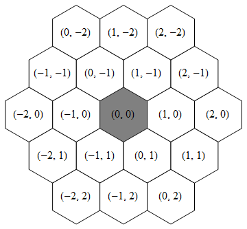
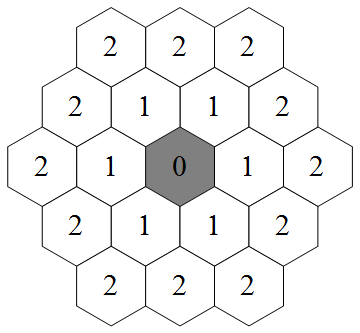

Adott egy fordulókra osztott stratégiai játék. Feladatotok az ellenfél bázisának lerombolása.
A játék 1 az 1 ellen történik, hasonlóan a sakkhoz, valamelyik játékos előbb kezd. A játék körökre osztott. Egy kör szerkezete:
A játék elején csak a bázisotok áll rendelkezésre, és valamennyi erőforrás. A játéknak vége van, ha legyőzitek az ellenfeletek bázisát, vagy a saját bázisotokat rombolják le. A játék akkor is véget ér ha nem kapunk választ a processztől 0.1 másodpercen belül, vagy ha hibásan kódolt üzenetet kapunk. Ekkor a rosszul viselkedő ágens automatikusan veszít.
A pálya hatszöghálós elrendezésű. Egy mezőt (x, y) egész párral azonosítjuk. A használt koordináta rendszert az alábbi ábra szemlélteti:

A szürke mezőtől mért távolságokat az alábbi ábra szemlélteti:
Egy mező szomszédainak azokat a mezőket hívjuk, melyeknek a mezőtől való távolsága pontosan 1.
Támadó egység: erős és nagyot sebez.
Erőforrás gyűjtő egység. Gyenge támadással is rendelkezik.
Erőforrás gyűjtés:
A dolgozónak úgy gyűjthet be erőforrást, ha rámozog egy bányára.
A bányára más egység is rámozoghat, de maximum egy lehet egyszerre rajta.
Ekkor a dolgozónál annyi erőforrás lesz amennyit elbír (kevesebb ha a bánya éppen kifogy), és ez az érték a bánya kapacitásából levonódik.
Ahhoz, hogy a begyűjtött erőforrás felhasználható legyen, vissza kell vinnie a bázishoz.
Amikor egy dolgozó a bázis egy szomszédos mezőjére lép, akkor a dolgozó leadja a begyűjtött erőforrást.
A dolgozók ide hozzák be a begyűjtött erőforrást, illetve a bázis képezhet ki új egységeket. A játék elején egy bázissal indultok. Ezt kell megvédeni ellenfeletektől, illetve az övékel lerombolni a győzelemhez.
A dolgozók a bányából gyűjthetnek erőforrást.
Ezek az objektumok nem mozognak.
| Katona (Soldier) |
Dolgozó (Worker) |
Bázis (Base) |
Bánya (Mine) |
Akadály (Obstacle) |
|
|---|---|---|---|---|---|
| Id | ✓ | ✓ | ✓ | ✓ | ✓ |
| Pozició | ✓ | ✓ | ✓ | ✓ | ✓ |
| Életerő | 0..20 | 0..9 | 0..300 | ||
| Támadási távolság | 3 | 2 | |||
| Látótávolság | 5 | 5 | 6 | ||
| Sebzés | 4 | 2 | |||
| Erőforrás | 0..10 | ||||
| Költség | 50 | 20 | |||
| Kapacitás | 0..10000 | ||||
| Csapat | ✓ | ✓ | ✓ |
A halvány kékkel kiemelt tulajdonságokat az ágensetek minden körben megkap. (lásd: kommunikáció)
Minden objektumot egyedien azonositó konstans string. A kommunikáció során ez az id használható egyes egységekre való hivatkozás során.
Az objektumok poziciója. Értéke egy egész számpár (x, y).
Az egységek életereje. Amikor ez 0-ra csökken az egység meghal és azonnal kikerül a játékból.
Megadja, hogy egy adott egység maximum mekkora távolságra tud támadni.
Programotok nem minden játékban levő objektumról kap információt. Csak olyanokról, melyek valamely egységetekhez legfeljebb az adott egységre jellemző látótávolság távolságra van.
Egy támadás hány életerőt von le a támadott egység életerejéből.
Megadja mennyi erőforrás van a dolgozónál.
Megadja mennyi erőforrásba kerül az adott egység kiképzése.
Megadja mennyi erőforrás van még a bányában. Ha egy bánya kiürül, nem tűnik el. A bányák kapacitása a játék elején különböző lehet.
Megadja az adott objektum melyik csapathoz tartozik. Azokat az egységeket irányíthatjátok, amelyeknek Csapat száma megegyezik a myteam változóval. A myteam változó egy-egy szimulációban nem változik.
Három féle parancs adható ki minden körben. Egy körben több parancs is kiadható. Egy katona vagy dolgozó egy körben maximum egy parancsot tud végrehajtani. A parancsok sorban hajtódnak végre. Amennyiben egy parancs nem tejlesíthető (szabálytalan, nem létező egység, stb), akkor annak nincs hatása a játékra.
Két paramétere van: mivel (withWhat):id és hova (toPosition):Position. A mozgás mindig csak egy szomszédos mezőre történhet. A bányán kívül nem lehet egyik objektumra sem rámozogni (lásd még a dolgozó leírását). Egy körben mozogni és támadni nem lehet egyszerre ugyanazzal az egységgel.
Két paramétere van: mivel (withWhat):id és mit (what):id. A támadás sikerességéhez a támadott objektumnak a támadási távolságon belül kell lennie. Egy körben támadni és mozogni nem lehet egyszerre ugyanazzal az egységgel.
Két paramétere van: mivel (withWhat):id és mit (what):{SOLDIER, WORKER}. Kiképzés parancs sikerességekor az adott egység költsége levonódik a rendelkezésre álló erőforrásból. Egy bázis egy körben maximum egy egységet tud kiképezni, és csak akkor, ha a bázison nem áll senki. A bázis mezőjéről való lemozgás után már nem lehet visszamenni. A kiképzett egységekkel leghamarabb a következő körben lehet mozogni.
A játékot irányító programotok és játék motorja közötti kommunikációra a Protocol Buffers használatos. Erről bővebben itt olvashattok. A kommunikációt leíró proto fájlokat a verseny weboldaláról tölthetitek le, egy nagyon buta példaprogrammal együtt. A kapott üzeneteket a programotok standard inputján kapjátok, a küldött üzeneteket pedig a standard outputra kell küldenetek.
Minden kör elején kaptok egy WorldStatusUpdate üzenetet. Ez tartalmazza az általatok látott egységeket és objektumokat (beleértve a saját egységeiteket is), valamint hogy mennyi erőforrással rendelkeztek és a saját a csapatotok számát (myteam). Az egységek és objektumok mezői tartalmazzák a korábbi táblázatban kékkel jelölt információkat is. Miután ezt megkaptátok, egy Commands üzenetet kell küldjetek, amibe beleteszitek a kiadni kívánt parancsokat. Minden parancsot egy Command típusú üzenetbe kell csomagolni, amiben megadjátok a parancs típusát (MOVE, ATTACK vagy TRAIN), és kitöltitek a megfelelő típusú parancsot (moveCommand, attackCommand vagy trainCommand). A parancsok paramétereinek jelentése a Parancsok fejezetben van leírva. Ezen üzenet elküldését követően a megadott parancsok végrehajtódnak (ha végrehajthatóak), és folytatódik a kör.
A fordítás során a kapott forrás fájlok mellé be fogjuk másolni a proto fájlokat és a ProtobufUtil.hh-t. Ezután a következő parancsokat adjuk ki:
Tehát használhatjátok a Boost library-k header-only részét is. Az általunk használt protoc verziója: 2.5.0, a g++ verziója 4.8.1, a boost verziója 1.54.0.
A verseny ideje alatt a 2. fordulóhoz hasonlóan, folyamatosan tudtok szerverünkön tesztelni a weboldal felületén keresztül. Ebben a tesztben egy pályán fogjuk futtatni az ágenseteket. Az ágensetek saját maga ellen fog játszani (tehát két példányban fut), így ki tudtok próbáni többféle taktikát is. A tesztelés során a myteam változó értéke 1 vagy 2. A pontozás során körmérkőzést fognak játszani az ágenseitek, tehát minden ágens fog minden ágens ellen játszani kétszer (térfél cserével). A végső sorrend a megnyert játékok száma alapján dől el. A pontozásnál használt pálya nagyon hasonló, de nem megyegyező a folyamatos tesztelésnél használt pályához. A pontozás során a myteam változó értéke nem 1 és nem 2.
A folyamatos tesztelés során az stderr-re (std::cerr) van lehetőségetek logolni, ágens példányonként maximum 5MB-ot. A teszteredményhez tartozó logokat letölthetitek a weboldalról.